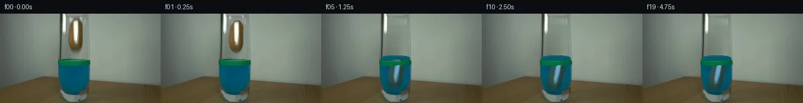

![首帧]()

Round 00
2026-11-05T16:06:44.313333+00:00像素候选变化代码 +317/−0inspection 更新
pixels 84edc57b0aa3ee42 · code b560940c99898ec1
查看本轮 generate.py 真实 diff
--- previous/generate.py
+++ current/generate.py
@@ -0,0 +1,317 @@
+"""Local, deterministic photographic pixel continuation. No model or renderer use."""
+from pathlib import Path
+import json
+import numpy as np
+from PIL import Image, ImageDraw, ImageFont, ImageFilter
+from scipy.ndimage import gaussian_filter, map_coordinates, binary_dilation
+from scipy.interpolate import PchipInterpolator
+from artifact_io import save
+
+ROOT = Path(__file__).resolve().parent
+SOURCE = np.asarray(Image.open(ROOT / 'first_frame.png').convert('RGB'))
+H, W = SOURCE.shape[:2]
+YY, XX = np.mgrid[:H, :W].astype(float)
+S = 4
+
+
+def smoothstep(x):
+ x = np.clip(x, 0, 1)
+ return x * x * (3 - 2 * x)
+
+
+def blend(dst, color, alpha):
+ alpha = np.asarray(alpha)
+ if alpha.ndim == 2:
+ alpha = alpha[..., None]
+ return dst * (1 - alpha) + np.asarray(color) * alpha
+
+
+def polygon_mask(points):
+ canvas = Image.new('L', (W * S, H * S))
+ ImageDraw.Draw(canvas).polygon([(round(x*S), round(y*S)) for x, y in points], fill=255)
+ return np.asarray(canvas.resize((W, H), Image.Resampling.LANCZOS), dtype=float) / 255
+
+
+# The narrow potato and its soft photographic edge, measured numerically.
+POTATO_OUTLINE = [
+ (119, 8.7), (125.8, 9.0), (129.5, 11.3), (131.4, 16.5),
+ (131.8, 24), (131.8, 39), (131.1, 47.5), (129.6, 53),
+ (127.7, 57), (124.2, 59.7), (119.8, 61.0), (115.6, 59.2),
+ (112.6, 55.8), (110.4, 50.5), (109.1, 45), (108.7, 36.0),
+ (109.4, 27), (110.2, 20.0), (112.0, 15.0), (115.0, 11.0),
+]
+sprite_alpha = gaussian_filter(polygon_mask(POTATO_OUTLINE), .38)
+
+# Remove the held potato, gripping tips, and soft lower shadow. Reconstruct
+# its background from adjacent photographed pixels on the same glass row.
+erase = polygon_mask([
+ (115, 3.8), (130.2, 4.3), (133.0, 12), (133, 51),
+ (131, 59), (128, 64.8), (113.5, 65), (108.0, 54),
+ (106.7, 31), (108.0, 14), (110.0, 7),
+])
+erase = np.clip(gaussian_filter(erase, .75) * 1.18, 0, 1)
+left = SOURCE[:, 105:108].astype(float).mean(axis=1)
+right = SOURCE[:, 133:136].astype(float).mean(axis=1)
+u = np.clip((XX - 107) / 26, 0, 1)
+reconstruction = left[:, None, :] * (1-u[..., None]) + right[:, None, :] * u[..., None]
+# A modest cylindrical shading dip is interpolated from the undisturbed
+# empty glass around y=65; all rows use the same stationary shading profile.
+reconstruction -= (2.4 * np.sin(np.pi*u)**2)[..., None]
+clean = blend(SOURCE.astype(float), reconstruction, erase)
+
+# Unmatting prevents the source background from travelling as a gray halo.
+sprite_rgb = SOURCE.astype(float).copy()
+aa = np.maximum(sprite_alpha[..., None], .14)
+sprite_rgb = np.clip((sprite_rgb - (1-sprite_alpha[..., None])*clean)/aa, 0, 255)
+
+# The only visible upper gripping edges in the crop. Their own source colors
+# are retained as these two tiny tips open and lift out through the top edge.
+tip_left = polygon_mask([(110.6, 8.0), (113.4, 7.5), (115.1, 11.7), (113.2, 14.0), (111.0, 12.0)])
+tip_right = polygon_mask([(127.1, 5.9), (129.4, 5.5), (131.5, 8.1), (131.1, 12.4), (128.6, 11.3)])
+
+# Green ink and glass rims are foreground occluders and remain registered.
+R, G, B = SOURCE.astype(float).transpose(2, 0, 1)
+band = (G-R > 35) & (G-B > 18) & (YY >= 75) & (YY <= 83)
+glass_l = PchipInterpolator([0, 100, 108, 116, 123, 128, 131, 143],
+ [94, 94, 95, 98, 103, 109, 116, 118])(YY)
+glass_r = PchipInterpolator([0, 100, 108, 116, 123, 128, 131, 143],
+ [141.7, 141.7, 140, 137, 132, 126.5, 122, 120])(YY)
+glass_inside = smoothstep((XX-glass_l)/.8) * smoothstep((glass_r-XX)/.8) * smoothstep((129.1-YY)/1.0)
+
+TIMES = np.arange(20) / 4
+motion_t = [0, .18, .25, .50, .75, 1, 1.25, 1.50, 1.75, 2, 2.5, 4.75]
+motion_y = [33.5, 33.5, 35.6, 57.5, 82.0, 91.0, 96.0, 98.8, 99.45, 99.2, 99.1, 99.1]
+motion_x = [120, 120, 120, 120, 119.7, 119.3, 118.7, 118.2, 118.1, 118.1, 118.1, 118.1]
+motion_a = [0, 0, .3, 1.5, 3, 5, 8, 11, 12.5, 12, 12, 12]
+path_y = PchipInterpolator(motion_t, motion_y)
+path_x = PchipInterpolator(motion_t, motion_x)
… diff truncated; 230 more lines …